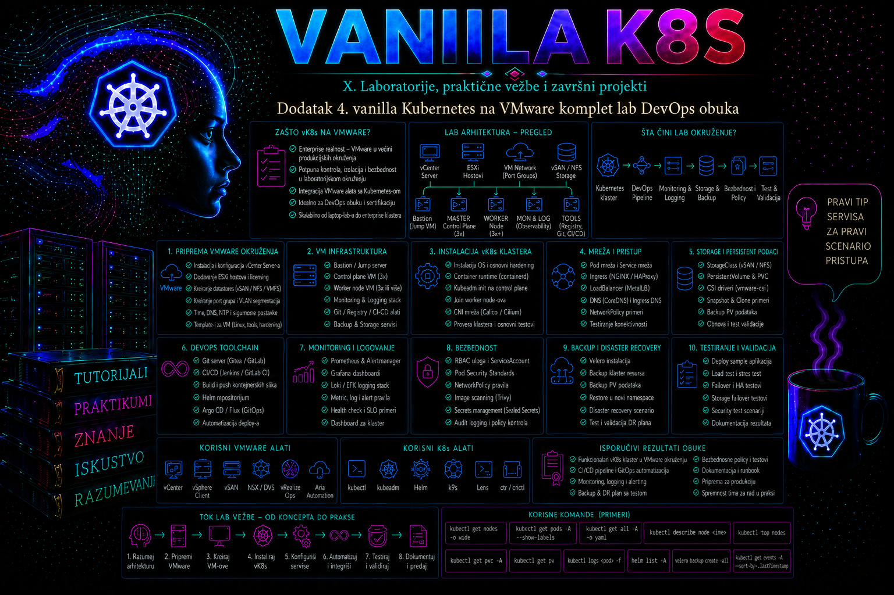

Vanilla Kubernetes

Ovaj dodatak povezuje administraciju VMware virtuelne infrastrukture, instalaciju vanilla Kubernetes klastera i osnovni DevOps tok u jednu proverljivu laboratorijsku celinu. Cilj nije samo da polaznik dobije funkcionalan klaster, već da razume gde prestaje odgovornost hipervizora, gde počinje odgovornost operativnog sistema, kako kubeadm uspostavlja control plane, kako CNI obezbeđuje mrežu podova i kako se aplikacija bezbedno uvodi, proverava, menja i uklanja. Laboratorija koristi virtuelne mašine na VMware vSphere ili VMware Workstation okruženju, Linux operativni sistem, containerd, kubeadm, kubectl, Calico mrežni dodatak, Helm i deklarativne Kubernetes manifeste.
Referentna implementacija koristi Kubernetes 1.35, koji je u julu 2026. aktivno podržana grana. U stvarnom okruženju ne treba slepo prepisivati broj verzije iz laboratorije: administrator pre instalacije proverava podržane Kubernetes, containerd, Linux kernel i CNI verzije, zatim bira tačno određenu patch verziju i dokumentuje je kao deo konfiguracionog baseline-a. Kubeadm obezbeđuje standardizovan bootstrap, ali ne kreira virtuelne mašine, ne instalira operativni sistem, ne bira CNI, ne rešava trajno skladište i ne uvodi monitoring, backup ili aplikacioni delivery proces. Upravo zato je ova laboratorija organizovana kao kompletan administrativni lanac, a ne kao jedna komanda kubeadm init.
Referentne promenljive i pravila njihove upotrebe
Sve naredne komande koriste konkretne vrednosti iz sledeće tabele. Ako se laboratorija prilagođava drugom okruženju, vrednosti se menjaju najpre u projektnom zapisu i svim manifestima, a tek zatim se izvršavaju komande. Oznake poput CONTROL_PLANE_IP objašnjavaju značenje vrednosti; nisu tekst koji treba doslovno proslediti programu. Shell promenljive, kada se privremeno koriste, važe samo u tekućoj shell sesiji i pre upotrebe se proveravaju komandom printf '%s\n' "$NAZIV". Prazna promenljiva je razlog za prekid, naročito pre state-changing ili destruktivne komande.
| Logička promenljiva | Referentna vrednost | Namena i ograničenje |
|---|---|---|
CONTROL_PLANE_IP | 192.168.50.11 | Node IP i laboratorijski API endpoint; single-control-plane, bez redundantnog VIP-a |
WORKER1_IP / WORKER2_IP | 192.168.50.21 / 192.168.50.22 | Statične ili DHCP-rezervisane Node IP adrese |
NODE_NETWORK | 192.168.50.0/24 | VMware port group i host/Node mreža |
POD_CIDR | 10.244.0.0/16 | Adrese Podova; mora odgovarati kubeadm i Calico IP pool konfiguraciji |
SERVICE_CIDR | 10.96.0.0/12 | Virtuelne ClusterIP adrese; ne rutiraju se kao Node mreža |
LB_POOL | 192.168.50.220–192.168.50.239 | Rezervisan za kasniji laboratorijski load balancer; ne koristi se u ovoj izgradnji |
LAB_DOMAIN | lab.example.internal | DNS domen hostova; zameniti domenom u vlasništvu organizacije |
CLUSTER_DOMAIN | cluster.local | Interni Kubernetes DNS domen; nije isto što i DNS domen hostova |
KUBERNETES_MINOR | v1.35 | Verzionisani paketni kanal; patch se zaključava u baseline-u |
KUBERNETES_VERSION | v1.35.6 | Primer pinovane patch verzije; pre izvođenja potvrditi da je dostupna i podržana |
Mapa laboratorije
| Faza | Mesto izvršavanja | Promena stanja | Dokaz uspeha |
|---|---|---|---|
| 1. Topologija i verzije | admin01, vCenter | Usvaja se baseline | Inventar, IP plan i matrica verzija |
| 2–4. VM, identitet i mreža | vCenter i svi čvorovi | Kreiraju se VM, hostname, DNS/NTP i mrežna pravila | getent, timedatectl, ip, ss i test portova |
| 5–7. Linux, CRI i Kubernetes alati | Svi čvorovi, sudo | Menjaju se kernel parametri; instaliraju containerd i kubeadm alati | sysctl/moduli, aktivan CRI, pinovane verzije |
| 8–10. Pre-flight, control plane i pristup | k8s-cp01; zatim admin01 | Inicijalizuje se API i štiti kubeconfig/join materijal | Statički Podovi, API odziv, dozvole 0600 |
| 11–13. CNI, worker-i i sistemska validacija | admin01 i worker-i | Uvodi se Pod mreža i registruju čvorovi | Ready čvorovi, CoreDNS, međučvorni Pod i Service test |
| 14. Probni workload | admin01 | Kreira se deklarisano aplikaciono stanje | Deployment, EndpointSlice, DNS i HTTP odgovor |
| 15. Greške i oporavak | Izolovana laboratorija | Uvode se reverzibilne greške | Dokaz uzroka, korekcije i oporavka |
| 16. Evidencija i odluka | admin01 i čvorovi | Čuva se baseline ili se klaster resetuje | Audit paket ili potvrđen cleanup |
Arhitektura kompletnog VMware laboratorijskog okruženja
Klaster se sastoji od jednog control plane i dva worker čvora. Takva topologija je dovoljna za učenje raspoređivanja podova, održavanja čvorova, rollout-a, mrežnih politika i otkaza jednog worker-a, ali nije visoko dostupna. Otkaz čvora k8s-cp01 prekida Kubernetes API i upravljanje klasterom, čak i kada postojeći kontejneri na worker čvorovima privremeno nastave da rade. Produkcioni klaster zahteva najmanje tri control plane čvora, pouzdan endpoint ispred API servera, odgovarajuću etcd topologiju i proverenu proceduru oporavka.
| Komponenta | Naziv | IP adresa | Resursi | Namena |
|---|---|---|---|---|
| Control plane VM | k8s-cp01 | 192.168.50.11 | 4 vCPU, 8 GB RAM, 80 GB | API server, scheduler, controller manager i lokalni etcd |
| Worker VM | k8s-w01 | 192.168.50.21 | 4 vCPU, 8 GB RAM, 100 GB | Aplikacioni podovi i sistemski DaemonSet podovi |
| Worker VM | k8s-w02 | 192.168.50.22 | 4 vCPU, 8 GB RAM, 100 GB | Aplikacioni podovi i test održavanja čvora |
| Administratorska stanica | admin01 | 192.168.50.10 | Postojeća Linux VM ili fizički računar | SSH, kubectl, Helm, Git i dokumentovanje promene |
Sve VM koriste Ubuntu Server 24.04 LTS, isti vremenski izvor, DNS rezoluciju i mrežni segment 192.168.50.0/24. Pod mreža je 10.244.0.0/16, a Service mreža 10.96.0.0/12. Ovi opsezi ne smeju da se preklapaju sa fizičkom mrežom, VPN rutama, VMware mrežama niti drugim povezanim klasterima. Preklapanje često proizvodi simptome koji liče na kvar CNI-ja: pod postoji, ali saobraćaj odlazi pogrešnom rutom ili se povratni paketi ne vraćaju.
| Topološka osobina | Referentna odluka | Dokaz pre bootstrap-a |
|---|---|---|
| Virtuelni interfejs | Jedan vmxnet3 adapter po VM, povezan na isti VLAN/port group; Linux naziv se očitava, ne pretpostavlja | ip -br link i vCenter backing mreža |
| Operativni sistem | Ubuntu Server 24.04 LTS, ista arhitektura i odobren patch nivo | cat /etc/os-release i uname -r |
| Razrešavanje | Forward DNS za k8s-cp01, k8s-w01 i k8s-w02; kontrolisani /etc/hosts samo kao laboratorijska alternativa | getent hosts na svakom čvoru |
| Vreme | Organizacioni NTP ili systemd-timesyncd/chrony prema standardu organizacije | timedatectl show -p NTPSynchronized |
| Repozitorijumi i registri | Direktan kontrolisani izlaz ili interni mirror; proxy i CA dokumentovani | apt-get update i probno preuzimanje planiranih slika |
| Administratorska stanica | admin01 sa SSH, kubectl, curl i Git; Helm je opcion za kasnije projekte | Verzije klijenata i SSH pristup bez deljenja root naloga |
| MTU | 1500 na referentnom Node segmentu; efektivni Pod MTU uskladiti sa Calico encapsulation overhead-om | ip link show i test bez fragmentacije prema mrežnom standardu |
Na VMware sloju svaki čvor mora imati stabilnu MAC adresu, jednu virtuelnu mrežnu karticu povezanu na odgovarajući port group i rezervisane ili statički konfigurisane IP adrese. VMware snapshot nije zamena za Kubernetes ili etcd backup. Snapshot aktivne VM sa lokalnim etcd-om može uhvatiti nedosledno stanje diska i memorije, a istovremeno vraćanje samo jednog člana višečlanog etcd klastera može proizvesti ozbiljnu nekonzistentnost. Snapshot je koristan kao kratkotrajna laboratorijska tačka povratka kada su VM uredno ugašene, ali se u produkciji koristi isključivo u skladu sa podržanom procedurom proizvođača i planom oporavka.
Odnos VMware, Linux i Kubernetes slojeva
Pouzdana administracija zahteva razdvajanje slojeva. VMware obezbeđuje virtuelni CPU, memoriju, disk, mrežnu karticu i dostupnost VM. Linux upravlja kernelom, sistemskim servisima, rutama, firewall-om, cgroup hijerarhijom i skladištem. Containerd preuzima slike i pokreće kontejnere preko CRI interfejsa. Kubelet registruje čvor, prati PodSpec i razgovara sa containerd-om. Kubernetes control plane donosi odluke o raspoređivanju i željenom stanju, dok CNI dodatak kreira mrežne interfejse podova i pravila prosleđivanja.
Zbog toga status Running u vCenter-u ne dokazuje da je Kubernetes čvor zdrav. VM može biti uključena, ali bez mreže, sa punim diskom, zaustavljenim kubelet-om ili neispravnim sertifikatom. Slično tome, stanje Ready ne dokazuje da aplikacija radi: pod može biti neuspešan zbog pogrešne slike, readiness provere ili nedostupne zavisnosti. Administrator prelazi od infrastrukture ka aplikaciji sistematski: VM i datastore, operativni sistem i vreme, containerd, kubelet, node conditions, sistemski podovi, Service i EndpointSlice objekti, pa tek onda aplikacioni odgovor.
VMware resurse ne treba prekomerno dodeljivati bez merenja. Kubernetes scheduler vidi virtuelne kapacitete prijavljene operativnom sistemu, ali ne zna da je fizički ESXi host pod pritiskom. Ako više VM dobije više vCPU nego što host realno može da isporuči, CPU ready vreme može porasti i izazvati kašnjenje kubelet-a, probe timeout-e i spore control plane operacije. Ballooning ili swap na hipervizoru mogu pogoršati latenciju etcd-a. Za control plane i etcd važniji su stabilna latencija i rezervisani resursi nego veliki nominalni kapacitet.
Preduslovi, pristup i bezbednosne granice
Polaznik treba da ima pravo kreiranja ili korišćenja tri VM, pristup konzoli u slučaju gubitka mreže, administratorski sudo nalog na čvorovima i SSH pristup sa stanice admin01. Pristup vCenter-u može biti read-only ako su VM već pripremljene. Za rad u Kubernetesu početno se koristi administratorski kubeconfig, ali se on ne deli sa aplikacionim timovima i ne kopira na javne ili zajedničke računare. U produkciji se administracija povezuje sa centralnim identitetom i RBAC ulogama sa najmanjim potrebnim pravima.
Pre bootstrap-a proveravaju se DNS, NTP, IP plan, MTU, izlaz ka repozitorijumima ili interni mirror, proxy pravila, raspoloživost potrebnih portova i jedinstveni hostnames. Kubeadm preflight provere otkrivaju deo problema, ali ne mogu potvrditi da se mrežni opsezi ne preklapaju sa udaljenim lokacijama niti da vSphere port group ima ispravnu bezbednosnu i VLAN konfiguraciju.
- TCP 6443 mora biti dostupan od svih čvorova prema Kubernetes API serveru.
- TCP 2379–2380 koristi lokalni ili višečlani etcd, u skladu sa izabranom topologijom.
- TCP 10250 koristi kubelet API; pristup se ograničava na ovlašćene komponente i administrativne mreže.
- CNI može zahtevati dodatne protokole ili portove. Za Calico se tačan skup proverava prema izabranom VXLAN, IP-in-IP ili BGP režimu.
- Pod i Service CIDR moraju biti rezervisani i dokumentovani u IPAM ili CMDB sistemu.
Priprema operativnog sistema i containerd runtime-a
Kubernetes čvor mora koristiti podržan Linux kernel, aktivno prosleđivanje IPv4 saobraćaja i dosledan cgroup drajver. Za systemd distribucije preporučuje se systemd cgroup drajver i za kubelet i za containerd. Mešanje systemd i cgroupfs drajvera može izazvati nestabilno upravljanje resursima i probleme pri promenama cgroup hijerarhije. Swap se u ovoj laboratoriji isključuje. Novije verzije kubelet-a imaju mogućnosti za kontrolisanu upotrebu swap-a, ali se ona ne uključuje bez eksplicitne politike, testiranja i odgovarajuće KubeletConfiguration konfiguracije.
Paketi Kubernetes komponenti moraju dolaziti iz zvaničnog verzionisanog repozitorijuma za izabranu minor granu. Kubelet, kubeadm i kubectl se zadržavaju na kontrolisanoj verziji kako nekontrolisana nadogradnja operativnog sistema ne bi promenila klaster. Zadržavanje paketa ne zamenjuje patch management: tim mora pratiti bezbednosna izdanja i sprovoditi planirane Kubernetes nadogradnje u podržanom redosledu, najpre control plane, zatim worker čvorove.
Kubeadm bootstrap i mreža klastera
Kubeadm na control plane čvoru generiše CA i sertifikate, kubeconfig fajlove, statičke Pod manifeste za API server, controller manager, scheduler i lokalni etcd, zatim kreira početne RBAC objekte, bootstrap tokene i osnovne dodatke. Statički Pod manifesti nalaze se u direktorijumu /etc/kubernetes/manifests; kubelet ih neposredno nadgleda. Ručna izmena ovih fajlova trenutno menja control plane komponentu i zato mora biti kontrolisana promena sa backup-om, peer review-om i validacijom.
Nakon kubeadm init, CoreDNS podovi mogu ostati u stanju Pending dok CNI nije instaliran. To je očekivano stanje, a ne dokaz da je DNS pokvaren. CNI dobija isti Pod CIDR koji je definisan u kubeadm konfiguraciji. Različiti opsezi između kubeadm-a i CNI-ja dovode do pogrešnog IPAM-a i nedostupnosti podova.
Calico u laboratoriji obezbeđuje Kubernetes mrežni model i NetworkPolicy primenu. Operator-based instalacija olakšava lifecycle upravljanje, ali uvodi sopstvene CRD objekte i kontrolere koje administrator mora pratiti. U okruženju bez izlaza na internet manifesti, Helm chart-ovi i kontejnerske slike unapred se prenose u kontrolisani interni repozitorijum, proverava im se integritet i prilagođavaju reference ka registriju. Direktno izvršavanje udaljenog manifesta bez prethodnog pregleda nije odgovarajuća enterprise praksa.
DevOps tok u laboratoriji
Kompletna obuka ne završava se kreiranjem čvorova. Klaster mora primiti verzionisan aplikacioni manifest, sprovesti kontrolisani rollout, izložiti servis, primeniti minimalnu mrežnu politiku i omogućiti proveru povratka na prethodnu verziju. Git repozitorijum je izvor deklarativne konfiguracije, dok se direktne promene komandama kubectl edit ili kubectl set image koriste za vežbu i hitne operacije, ali se svaka trajna promena vraća u Git kako ne bi nastao configuration drift.
Helm je koristan za paketiranje složenijih aplikacija i dodataka, ali ne rešava sam po sebi kontrolu pristupa, tajne, kvalitet chart-a ili rollback baze podataka. Kubernetes rollback vraća prethodni Pod template Deployment-a; ne vraća automatski šemu baze, spoljne servise niti podatke. Za stateful aplikacije plan migracije i povratka mora postojati pre rollout-a.
Integrisani praktikum – šesnaest faza izgradnje, validacije i oporavka
Poslovni i tehnički kontekst. Interni DevOps tim treba izolovano VMware okruženje u kojem može vežbati instalaciju Kubernetes klastera, deklarativni deployment aplikacije, mrežnu izolaciju, rollout, rollback i osnovni troubleshooting. Okruženje nije namenjeno produkcionim podacima. Cilj je da sva tri čvora budu registrovana i u stanju Ready, da aplikacija web-demo radi u namespace-u training, da bude dostupna preko NodePort servisa i da negativni mrežni test dokaže primenu NetworkPolicy pravila.
Referentno okruženje i prava. VM i IP adrese odgovaraju prethodnoj tabeli. Korisnik labadmin ima SSH i sudo pristup na sva tri čvora. Kubernetes administratorske komande izvršavaju se sa admin01 nakon bezbednog prenosa kubeconfig-a. Sve komande za pripremu Linux čvorova izvršavaju se na sva tri čvora, osim kada je drugačije navedeno.
-
Faze 1–4 – projektujte topologiju i verzije, pripremite VM, identitet, vreme i mrežu.
U vCenter-u ili VMware konzoli potvrdite da su tri VM uključene, povezane na isti port group, da nemaju aktivan stari snapshot i da datastore ima najmanje 20% slobodnog prostora. Zatim sa
admin01proverite DNS, ICMP i SSH.
Validacija: svaki naziv mora vratiti očekivanu IP adresu, SSH mora prikazati jedinstven hostname, a sinhronizacija vremena vrednostgetent hosts k8s-cp01 k8s-w01 k8s-w02 ping -c 3 192.168.50.11 ping -c 3 192.168.50.21 ping -c 3 192.168.50.22 for host in k8s-cp01 k8s-w01 k8s-w02; do ssh labadmin@"${host}" 'hostname -f; timedatectl show -p NTPSynchronized --value' doneyes. Ako vreme nije sinhronizovano, zaustavite postupak; velika vremenska razlika izaziva TLS i bootstrap probleme. -
Faza 5 – pripremite kernel, sysctl parametre i swap.
Na sva tri čvora učitajte module potrebne za bridged mrežu i omogućite prosleđivanje paketa. Trajno isključite swap unos u
/etc/fstabtek nakon što proverite njegov sadržaj.sudo tee /etc/modules-load.d/k8s.conf >/dev/null <<'EOF' overlay br_netfilter EOF sudo modprobe overlay sudo modprobe br_netfilter sudo tee /etc/sysctl.d/99-kubernetes-cri.conf >/dev/null <<'EOF' net.bridge.bridge-nf-call-iptables = 1 net.bridge.bridge-nf-call-ip6tables = 1 net.ipv4.ip_forward = 1 EOF sudo sysctl --system swapon --show grep -nE '[[:space:]]swap[[:space:]]' /etc/fstabUpozorenje: sledeća izmena menja boot konfiguraciju. U produkciji prvo napravite kopiju fajla i proverite da swap nije potreban drugoj podržanoj funkciji.
Validacija:sudo cp -a /etc/fstab /etc/fstab.pre-k8s sudo sed -ri '/[[:space:]]swap[[:space:]]/s/^/# k8s-disabled: /' /etc/fstab sudo swapoff -a
Očekuje se vrednostsysctl net.ipv4.ip_forward sysctl net.bridge.bridge-nf-call-iptables swapon --show lsmod | grep -E 'overlay|br_netfilter'1za oba sysctl parametra, prazan izlaz komandeswapon --showi učitana oba modula. -
Faza 6 – instalirajte i konfigurišite CRI-kompatibilan containerd.
Na sva tri čvora instalirajte containerd iz odobrenog distribucionog ili internog repozitorijuma, generišite podrazumevanu konfiguraciju i uključite systemd cgroup režim.
Validacija:sudo apt-get update sudo apt-get install -y containerd sudo install -d -m 0755 /etc/containerd containerd config default | sudo tee /etc/containerd/config.toml >/dev/null sudo sed -ri 's/SystemdCgroup = false/SystemdCgroup = true/' /etc/containerd/config.toml sudo systemctl restart containerd sudo systemctl enable containerd
Servis mora bitisudo systemctl is-active containerd sudo systemctl is-enabled containerd sudo grep -n 'SystemdCgroup = true' /etc/containerd/config.toml sudo ctr plugins ls | grep 'io.containerd.grpc.v1.cri'activeienabled, a CRI plugin bez statusa greške. Ako containerd ne startuje, prvo pregledajtejournalctl -u containerd; ne nastavljajte ka kubeadm-u dok runtime nije stabilan. -
Faza 7 – instalirajte verzionisane kubeadm, kubelet i kubectl pakete.
Na sva tri čvora dodajte zvanični repozitorijum za granu 1.35, proverite fingerprint ključa prema zvaničnoj dokumentaciji organizacije i instalirajte pakete. Primer pretpostavlja da organizacija odobrava javni repozitorijum.
Validacija:sudo apt-get install -y apt-transport-https ca-certificates curl gpg sudo install -m 0755 -d /etc/apt/keyrings curl -fsSL https://pkgs.k8s.io/core:/stable:/v1.35/deb/Release.key \ | sudo gpg --dearmor -o /etc/apt/keyrings/kubernetes-apt-keyring.gpg echo 'deb [signed-by=/etc/apt/keyrings/kubernetes-apt-keyring.gpg] https://pkgs.k8s.io/core:/stable:/v1.35/deb/ /' \ | sudo tee /etc/apt/sources.list.d/kubernetes.list sudo apt-get update sudo apt-get install -y kubelet kubeadm kubectl sudo apt-mark hold kubelet kubeadm kubectl
Sve tri komponente moraju pripadati istoj planiranoj minor grani. Kubelet može biti u stanju restartovanja pre bootstrap-a; to je očekivano jer još nema konfiguraciju klastera.kubeadm version -o short kubectl version --client apt-mark showhold | grep -E 'kubelet|kubeadm|kubectl' sudo systemctl enable kubelet -
Faza 8 – izvršite pre-flight provere i dokumentujte početno stanje.
Samo na
k8s-cp01napravite direktorijum i konfiguracioni fajl. Verzijuv1beta4koristite zato što je aktuelni kubeadm konfiguracioni API za ovu granu.
Validacija: konfiguracija mora proći bez greške, a spisak slika mora biti dostupan iz odobrenog registrija. Ako izabrani patch više nije dostupan, promena verzije zahteva ažuriranje laboratorijskog baseline-a, a ne proizvoljan izbor druge verzije tokom instalacije.sudo install -d -m 0700 /root/kubeadm sudo tee /root/kubeadm/kubeadm-init.yaml >/dev/null <<'EOF' apiVersion: kubeadm.k8s.io/v1beta4 kind: InitConfiguration localAPIEndpoint: advertiseAddress: 192.168.50.11 bindPort: 6443 nodeRegistration: criSocket: unix:///run/containerd/containerd.sock name: k8s-cp01 --- apiVersion: kubeadm.k8s.io/v1beta4 kind: ClusterConfiguration clusterName: vmware-lab controlPlaneEndpoint: 192.168.50.11:6443 kubernetesVersion: v1.35.6 networking: dnsDomain: cluster.local podSubnet: 10.244.0.0/16 serviceSubnet: 10.96.0.0/12 --- apiVersion: kubelet.config.k8s.io/v1beta1 kind: KubeletConfiguration cgroupDriver: systemd rotateCertificates: true serverTLSBootstrap: true EOF sudo kubeadm config validate --config /root/kubeadm/kubeadm-init.yaml sudo kubeadm config images list --config /root/kubeadm/kubeadm-init.yaml -
Faza 9 – inicijalizujte prvu i jedinu laboratorijsku kontrolnu ravan.
Na
k8s-cp01prvo pokrenite preflight, zatim bootstrap. Sačuvajte kompletan izlaz u root direktorijumu zbog audita i troubleshooting-a.
Validacija:sudo kubeadm init phase preflight --config /root/kubeadm/kubeadm-init.yaml sudo kubeadm init --config /root/kubeadm/kubeadm-init.yaml \ | sudo tee /root/kubeadm/kubeadm-init-output.txt
Control plane čvor će pre instalacije CNI-ja verovatno bitisudo crictl --runtime-endpoint unix:///run/containerd/containerd.sock ps sudo KUBECONFIG=/etc/kubernetes/admin.conf kubectl get nodes sudo KUBECONFIG=/etc/kubernetes/admin.conf kubectl get pods -ANotReady, a CoreDNSPending. API server, scheduler, controller manager i etcd moraju biti vidljivi kao pokrenuti kontejneri. Ako API nije dostupan, proveritejournalctl -u kubeleti statičke manifeste u/etc/kubernetes/manifests. -
Faza 10 – bezbedno postavite kubeconfig i upravljajte join podacima.
Na
admin01kreirajte zaštićen direktorijum, zatim bezbedno preuzmite kubeconfig sa control plane čvora. Administratorski fajl ima široka prava i ne sme se čuvati u Git-u.
Validacija:install -d -m 0700 "${HOME}/.kube" ssh labadmin@k8s-cp01 'sudo cat /etc/kubernetes/admin.conf' \ > "${HOME}/.kube/config" chmod 0600 "${HOME}/.kube/config" kubectl cluster-info kubectl get nodeskubectl cluster-infomora prikazati endpoint192.168.50.11:6443. Ako sertifikat nije validan za korišćeni naziv ili adresu, ne isključujte TLS proveru; ispravite control plane endpoint i Subject Alternative Name plan kroz podržanu proceduru. -
Faza 11 – instalirajte i validirajte Calico CNI.
Na
admin01preuzmite verzionisane operator i custom resources manifeste iz zvaničnog izvora, pregledajte ih i sačuvajte u Git ili kontrolisani artefaktni repozitorijum. Referentni par je Calico Open Sourcev3.32.1sa Kubernetesv1.35.6; Calico 3.32 je zvanično testiran sa Kubernetes granama 1.34, 1.35 i 1.36. Sledeći primer pretpostavlja da su provereni fajlovi već sačuvani kaomanifests/tigera-operator.yamlimanifests/calico-custom-resources.yaml, pri čemu drugi fajl koristi CIDR10.244.0.0/16. Ne koriste se URL oznakelatest. Ako se biraju novi nativeprojectcalico.org/v3CRD objekti, za Kubernetes 1.35 mora se posebno proveriti zahtev zaMutatingAdmissionPolicyfeature gate; ova laboratorija ostaje na standardnom operator toku bez neobjašnjenog uključivanja te verzijski zavisne mogućnosti.install -d -m 0755 "${HOME}/vmware-k8s-lab/manifests" cd "${HOME}/vmware-k8s-lab" curl --fail --location --proto '=https' --tlsv1.2 \ --output manifests/tigera-operator.yaml \ https://raw.githubusercontent.com/projectcalico/calico/v3.32.1/manifests/tigera-operator.yaml curl --fail --location --proto '=https' --tlsv1.2 \ --output manifests/calico-custom-resources.yaml \ https://raw.githubusercontent.com/projectcalico/calico/v3.32.1/manifests/custom-resources.yaml sha256sum manifests/tigera-operator.yaml manifests/calico-custom-resources.yaml grep -n 'cidr:' manifests/calico-custom-resources.yamlOve komande samo preuzimaju lokalne kopije i izračunavaju digest; još ne menjaju klaster. Digest se upisuje u audit zapis i poredi sa odobrenim internim artefaktom. Zvanični primer
custom-resources.yamlmora se pregledati i njegov IPv4 pool promeniti na10.244.0.0/16pre primene. Izmenu uradite u editoru ili verzionisanom patch-u, zatim proveritegit diff --check,grep -n 'cidr:'i server-side dry-run. Globalna tekstualna zamena bez potvrde konteksta nije prihvatljiva.
Validacija: sačekajte da Calico komponente budumkdir -p "${HOME}/vmware-k8s-lab/manifests" cd "${HOME}/vmware-k8s-lab" kubectl apply --server-side --dry-run=server -f manifests/tigera-operator.yaml kubectl apply -f manifests/tigera-operator.yaml kubectl wait --for=condition=Established crd/installations.operator.tigera.io --timeout=180s kubectl apply --server-side --dry-run=server -f manifests/calico-custom-resources.yaml kubectl apply -f manifests/calico-custom-resources.yaml kubectl get tigerastatus kubectl get pods -n calico-system -wAvailable, zatim proverite:
CoreDNS i control plane čvor moraju postatikubectl wait --for=condition=Ready nodes/k8s-cp01 --timeout=300s kubectl get pods -n kube-system kubectl get pods -n calico-system kubectl get nodes -o wideReady. Ako Calico podovi prijavljuju MTU ili tunelske probleme, uporedite MTU na VM interfejsu, port group-u i Calico konfiguraciji; nasumično smanjivanje MTU-a bez merenja samo prikriva uzrok. -
Faza 12 – pridružite worker čvorove.
Na
k8s-cp01generišite kratkotrajnu join komandu. Token je poverljiv bootstrap materijal i ne treba ga slati nezaštićenim kanalima niti čuvati u repozitorijumu.
Dobijenu komandu izvršite sasudo kubeadm token create --ttl 30m --print-join-commandsudonak8s-w01ik8s-w02. Primer strukture je:
Validacija:sudo kubeadm join 192.168.50.11:6443 \ --token <KRATKOTRAJNI_TOKEN> \ --discovery-token-ca-cert-hash sha256:<CA_HASH> \ --cri-socket unix:///run/containerd/containerd.sock
Sva tri čvora moraju bitikubectl wait --for=condition=Ready node/k8s-w01 --timeout=300s kubectl wait --for=condition=Ready node/k8s-w02 --timeout=300s kubectl get nodes -o wide kubectl get pods -A -o wideReady, sa očekivanim internim IP adresama i container runtime vrednošću koja upućuje na containerd. -
Faze 13–14 – validirajte sistemske funkcije i uvedite probni workload.
Na
admin01najpre read-only proverama potvrdite da sistemski Podovi nemaju nerešene kritične greške, da CoreDNS ima spremne endpoint-e i da su svakom Node objektu dodeljeni različiti Pod CIDR blokovi.
Ako bilo koji sistemski Pod ostaje ukubectl get nodes -o custom-columns=NAME:.metadata.name,READY:.status.conditions[-1].status,PODCIDR:.spec.podCIDR kubectl get pods -n kube-system -o wide kubectl get deployment coredns -n kube-system kubectl get service,endpointslice -n kube-system -l k8s-app=kube-dns kubectl get events -A --sort-by=.lastTimestamp | tail -n 40CrashLoopBackOff,ImagePullBackOffili nije spreman, faza se prekida i proveravaju sekubectl describe, odgovarajući Pod log i kubelet/containerd journal na njegovom čvoru. Tek zatim naadmin01napravite Git radni direktorijum i deklarativni manifest. Aplikacija koristi dve replike, Pod anti-affinity kako bi se u ovoj laboratoriji replike rasporedile na različite worker-e, resource requests i limits, readiness i liveness provere, bez privilegija i sa read-only root filesystem-om.
Validacija:cd "${HOME}/vmware-k8s-lab" mkdir -p apps/web-demo cat > apps/web-demo/web-demo.yaml <<'EOF' apiVersion: v1 kind: Namespace metadata: name: training --- apiVersion: apps/v1 kind: Deployment metadata: name: web-demo namespace: training spec: replicas: 2 revisionHistoryLimit: 5 selector: matchLabels: app: web-demo template: metadata: labels: app: web-demo spec: securityContext: seccompProfile: type: RuntimeDefault affinity: podAntiAffinity: requiredDuringSchedulingIgnoredDuringExecution: - labelSelector: matchLabels: app: web-demo topologyKey: kubernetes.io/hostname containers: - name: web image: registry.k8s.io/e2e-test-images/agnhost:2.53 args: - netexec - --http-port=8080 ports: - name: http containerPort: 8080 resources: requests: cpu: 50m memory: 64Mi limits: cpu: 250m memory: 128Mi readinessProbe: httpGet: path: /healthz port: http initialDelaySeconds: 3 periodSeconds: 5 livenessProbe: httpGet: path: /healthz port: http initialDelaySeconds: 10 periodSeconds: 10 securityContext: allowPrivilegeEscalation: false readOnlyRootFilesystem: true runAsNonRoot: true capabilities: drop: - ALL --- apiVersion: v1 kind: Service metadata: name: web-demo namespace: training spec: type: NodePort selector: app: web-demo ports: - name: http port: 80 targetPort: http nodePort: 30080 EOF kubectl apply --server-side --dry-run=server -f apps/web-demo/web-demo.yaml kubectl apply -f apps/web-demo/web-demo.yaml kubectl rollout status deployment/web-demo -n training --timeout=180s
Deployment mora imatikubectl get deployment,pods,service,endpointslice -n training -o wide curl --fail --max-time 5 http://192.168.50.21:30080/hostname curl --fail --max-time 5 http://192.168.50.22:30080/hostname2/2dostupne replike, EndpointSlice dve spremne adrese, a oba NodePort testa HTTP odgovor. Ako Service postoji bez endpoint-a, proverite pod labels i Service selector pre mrežne infrastrukture.Dokaz CoreDNS-a, Service mreže i međučvorne Pod komunikacije. Sa
admin01, kao Kubernetes administrator, sledeće komande kreiraju kratkotrajni test Pod nak8s-w01. Pre dodele ciljne adrese proverava se da jednaweb-demoreplika zaista radi nak8s-w02; prazna vrednost prekida test.TARGET_POD_IP="$(kubectl get pod -n training -l app=web-demo \ --field-selector spec.nodeName=k8s-w02 \ -o jsonpath='{.items[0].status.podIP}')" printf 'Ciljni Pod IP: %s\n' "${TARGET_POD_IP}" test -n "${TARGET_POD_IP}" || { echo 'Nema ciljnog Pod-a na k8s-w02' >&2; exit 1; } kubectl run cross-node-client -n training \ --image=busybox:1.36.1 --restart=Never \ --overrides='{"spec":{"nodeName":"k8s-w01"}}' \ --command -- sleep 900 kubectl wait --for=condition=Ready pod/cross-node-client -n training --timeout=120s kubectl get pod cross-node-client -n training -o wide kubectl exec -n training cross-node-client -- nslookup kubernetes.default.svc.cluster.local kubectl exec -n training cross-node-client -- wget -qO- --timeout=5 http://web-demo/hostname kubectl exec -n training cross-node-client -- wget -qO- --timeout=5 "http://${TARGET_POD_IP}:8080/hostname"Prvi test dokazuje CoreDNS i Service ime, drugi kube-proxy Service usmeravanje ka spremnom endpoint-u, a treći direktnu Pod-to-Pod komunikaciju sa
k8s-w01ka Pod-u nak8s-w02. Očekuje se HTTP odgovor u sva tri slučaja. Posle toga obrišite jedanweb-demoPod, ali ne Deployment; kontroler mora kreirati zamenu, ponovo postići2/2i zadržati funkcionalan Service.kubectl delete pod -n training -l app=web-demo --field-selector spec.nodeName=k8s-w01 kubectl rollout status deployment/web-demo -n training --timeout=180s kubectl get pods -n training -l app=web-demo -o wide kubectl exec -n training cross-node-client -- wget -qO- --timeout=5 http://web-demo/hostnameBrisanje Pod-a je state-changing, ali bezbedno u ovoj stateless laboratoriji sa dve replike. Ne koristi se kao generička produkciona dijagnostika i ne sme se primeniti na jedinu repliku ili stateful workload bez procene posledica.
-
Faza 15a – proverite NetworkPolicy pozitivnim i negativnim testom.
Prvo kreirajte test pod i potvrdite da trenutno može da pristupi servisu. Zatim uvedite default-deny ingress i dozvolite pristup samo podovima sa oznakom
access=web-demo.kubectl run net-test -n training \ --image=busybox:1.36.1 \ --restart=Never --command -- sleep 3600 kubectl wait --for=condition=Ready pod/net-test -n training --timeout=120s kubectl exec -n training net-test -- \ wget -qO- --timeout=3 http://web-demo/hostname
Očekivani negativni rezultat: poslednja komanda mora isteći ili vratiti grešku jer test pod nema potrebnu oznaku. Zatim dozvolite pristup i ponovite test:cat > apps/web-demo/network-policy.yaml <<'EOF' apiVersion: networking.k8s.io/v1 kind: NetworkPolicy metadata: name: web-demo-ingress namespace: training spec: podSelector: matchLabels: app: web-demo policyTypes: - Ingress ingress: - from: - podSelector: matchLabels: access: web-demo ports: - protocol: TCP port: 8080 EOF kubectl apply -f apps/web-demo/network-policy.yaml kubectl exec -n training net-test -- wget -qO- --timeout=3 http://web-demo/hostname
Poslednja komanda mora uspeti. Time je dokazano ne samo da objekat NetworkPolicy postoji, već da ga CNI zaista primenjuje.kubectl label pod net-test -n training access=web-demo kubectl exec -n training net-test -- wget -qO- --timeout=3 http://web-demo/hostname -
Faza 15b – proverite deklarisano stanje, rollout i rollback.
Napravite kontrolisanu promenu broja replika i dodajte oznaku verzije u Pod template. U realnom GitOps toku najpre se menja manifest, radi review i tek zatim sinhronizuje klaster.
Validacija:kubectl patch deployment web-demo -n training --type merge -p ' spec: replicas: 3 template: metadata: labels: version: v2 ' kubectl rollout status deployment/web-demo -n training --timeout=180s kubectl rollout history deployment/web-demo -n training
Za rollback:kubectl get pods -n training -l app=web-demo \ -o custom-columns=NAME:.metadata.name,VERSION:.metadata.labels.version,NODE:.spec.nodeName,READY:.status.containerStatuses[0].ready
Rollback mora vratiti prethodni Pod template. Broj replika može ostati deo konkretne istorijske revizije, pa se željeno stanje uvek potvrđuje prema verzionisanom manifestu, a ne pretpostavlja.kubectl rollout undo deployment/web-demo -n training kubectl rollout status deployment/web-demo -n training --timeout=180s kubectl get deployment web-demo -n training \ -o jsonpath='{.spec.replicas}{" replicas; version="}{.spec.template.metadata.labels.version}{"\n"}' -
Faza 15c – proverite ponašanje pri održavanju worker čvora.
Drain simulira planirano održavanje VM. Pre postupka proverite da drugi worker ima dovoljno kapaciteta.
kubectl get pods -n training -o wide kubectl drain k8s-w01 --ignore-daemonsets --delete-emptydir-data kubectl get nodes kubectl get pods -n training -o wide curl --fail --max-time 5 http://192.168.50.22:30080/hostnameUpozorenje: opcija
Validacija:--delete-emptydir-datadozvoljava evikciju podova koji koristeemptyDir, pri čemu se lokalni privremeni podaci gube. Ne koristi se bez provere workload-a.k8s-w01mora biti označen kaoSchedulingDisabled, a aplikacioni podovi premešteni na raspoloživ worker. Vratite čvor u raspoređivanje:kubectl uncordon k8s-w01 kubectl get nodes kubectl get pods -n training -o wide -
Faza 16 – sačuvajte dijagnostičke podatke i donesite odluku o laboratoriji.
Napravite audit direktorijum sa stanjem klastera, događajima i verzijama. Ne unosite tokene ili sadržaj Secret objekata.
Kriterijumi prihvatanja: tri čvora sumkdir -p "${HOME}/vmware-k8s-lab/audit" kubectl get nodes -o wide > audit/nodes.txt kubectl get pods -A -o wide > audit/pods-all.txt kubectl get events -A --sort-by=.lastTimestamp > audit/events.txt kubectl version > audit/kubernetes-version.txt kubectl get deployment,service,networkpolicy -n training -o yaml \ > audit/training-resources.yaml date --iso-8601=seconds > audit/collected-at.txtReady; dve aplikacione replike su dostupne nakon rollback-a; oba worker NodePort endpoint-a vraćaju HTTP odgovor; EndpointSlice ima spremne backend adrese; neoznačeni test pod je blokiran, a označeni pod ima pristup; drain i uncordon završavaju bez trajnog prekida aplikacije; audit direktorijum sadrži vreme, verzije, stanje resursa i događaje.
Logovi, tipične greške i njihovo razlikovanje
Na Linux čvorovima najvažniji početni izvori su journalctl -u kubelet i journalctl -u containerd. Kubelet log pokazuje registraciju čvora, probleme sa sertifikatima, CNI inicijalizaciju, probe i mount operacije. Containerd log pokazuje CRI, image pull, snapshotter i runtime greške. Za control plane kontejnere koristi se crictl ps -a i crictl logs <CONTAINER_ID>, posebno kada Kubernetes API nije dostupan pa kubectl logs ne može da radi.
- Čvor je NotReady sa porukom da mrežni plugin nije spreman: proveravaju se Calico podovi, CNI fajlovi u
/etc/cni/net.d, rute i kubelet journal. To nije isto što i nedostupan API server. - Pod je Pending:
kubectl describe podi događaji razlikuju nedostatak resursa, taint, PVC problem i neuspešno raspoređivanje. Containerd se ne istražuje pre nego što scheduler uopšte dodeli čvor. - ImagePullBackOff: proveravaju se naziv i tag slike, DNS, registrijski pristup, proxy, CA lanac i image pull secret. Restart kubelet-a ne popravlja pogrešne credentials.
- Service nema saobraćaj: prvo se proveravaju selector, labels, EndpointSlice i readiness. Ako endpoint-a nema, problem je iznad mrežnog transporta.
- VM je spora, a Kubernetes nema očiglednu grešku: proveravaju se CPU ready, memorijski pritisak, datastore latencija i packet loss na VMware sloju, zatim node conditions i sistemske metrike.
Kontrolisani scenariji grešaka – dokaz, korekcija i potvrda oporavka
Svaki scenario izvodi se pojedinačno, tek kada je završna kontrolna tačka prethodne faze uspešna. Granica eksperimenta je laboratorijski klaster bez produkcionih podataka. Pre promene beleže se vreme, stanje čvorova i Podova i poslednji događaji; ne uvode se dve greške istovremeno. Dijagnostički zapis mora razlikovati simptom koji korisnik vidi, neposredni uzrok i osnovni uzrok u procesu ili konfiguraciji.
-
Zaustavljen kubelet na jednom worker-u. Na
k8s-w02, korisniklabadminsasudo, komandasudo systemctl stop kubeletmenja stanje samo jednog servisa i reverzibilna je. Pre toga saadmin01zabeležitekubectl get nodesikubectl get pods -A -o wide. Simptom neće nužno biti trenutan: Node kontroler mora prvo prekoračiti prag za heartbeat. Dokaz se prikuplja komandamasystemctl status kubelet --no-pager,journalctl -u kubelet --since '-10 min',kubectl describe node k8s-w02i događajima. Hipoteza je potvrđena kada je servis neaktivan, a poslednji Node heartbeat zastareo. Korekcija jesudo systemctl start kubelet, ne restart svih čvorova. Oporavak se dokazuje stanjemReady, novim lease/heartbeat vremenom i odsustvom novih kritičnih događaja. Osnovni uzrok u stvarnom incidentu tražio bi se u poslednjoj promeni, resursima ili systemd zavisnostima; ručno zaustavljanje je samo laboratorijski okidač. -
Istekao ili pogrešan join token. Ovaj scenario izvodi se samo na resetovanom, još nepridruženom worker-u ili kao read-only demonstracija komande sa namerno izmenjenim tokenom; ne resetuje se zdrav čvor samo radi testa. Očekivani simptom je greška bootstrap autentikacije, dok API port može ostati dostupan. Sa worker-a se proveravaju
getent hosts k8s-cp01,nc -zv 192.168.50.11 6443i kubeadm izlaz; na control plane-usudo kubeadm token list. Neposredni uzrok je nevažeći token, a osnovni uzrok može biti zastarela operativna beleška ili nebezbedno dugotrajno čuvanje join komande. Trajna korekcija je nak8s-cp01generisati kratkotrajan novi materijal komandomsudo kubeadm token create --ttl 30m --print-join-command, preneti ga odobrenim tajnim kanalom i izvršiti jednom. Oporavak se potvrđuje pojavom Node objekta, važećim kubelet sertifikatom i stanjemReady. Join komanda se zatim uklanja iz beleške i, prema pravilima organizacije, iz shell istorije. -
Service bez endpoint-a zbog pogrešne oznake. Na
admin01napravite kopiju manifesta, zatim reverzibilno promenite Service selector na nepostojeću vrednost. Granica je samotraining/web-demo; Node, CNI i sistemski namespace-i se ne menjaju. Simptom je timeout ili odbijen aplikacioni zahtev, alikubectl get servicei dalje prikazuje objekat. Dokazi sukubectl get pods --show-labels -n training,kubectl describe service web-demo -n trainingikubectl get endpointslice -n training -l kubernetes.io/service-name=web-demo -o yaml. Prazan skup endpoint-a potvrđuje da paket još nije stigao do CNI transporta; restart kubelet-a nije opravdan. Vratite selector iz verzionisanog manifesta komandomkubectl apply -f apps/web-demo/web-demo.yaml. Oporavak se dokazuje spremnim EndpointSlice adresama, DNS razrešavanjem imena servisa i HTTP odgovorom. Osnovni uzrok je promena mimo pregleda ili nedosledna label konvencija, pa trajna mera uključuje server-side dry-run i review manifesta. -
CNI/Pod CIDR neslaganje – analiza bez rizične izmene živog klastera. Ne menjajte aktivni Calico IP pool niti controller-manager
--cluster-cidrradi demonstracije: takva izmena može prekinuti sav Pod saobraćaj i zahtevati ponovno građenje. Umesto toga uporedite read-only dokaze: kubeadmClusterConfigurationu ConfigMap-ukubeadm-config, Nodespec.podCIDRvrednosti i Calico IPPool objekte. Ako opsezi nisu sadržani u planiranom10.244.0.0/16, zaustavite dalje deployment-e, sačuvajte dokaze i sledite zvaničnu migracionu ili rebuild proceduru izabrane verzije. Nasumično dodavanje ruta ili NAT pravila nije trajna korekcija. Oporavak zahteva nove Podove na oba worker-a, uzajamnu komunikaciju, CoreDNS i Service test.
Za svaki scenario incident beleška sadrži: vreme i obim; poslednju poznatu dobru kontrolnu tačku; poslednju promenu; simptom i posledicu; korišćene komande i relevantne isečke logova; hipotezu; neposredni i osnovni uzrok; privremeno zaobilazno rešenje ako je zaista bilo potrebno; trajnu meru; dokaz oporavka; i odluku da li se nalaz pretvara u automatizovanu pre-flight proveru.
Rollback, cleanup i vraćanje laboratorije
Mogućnost A – očuvanje funkcionalnog klastera
Preporučena odluka za nastavak tutorijala jeste da se klaster sačuva kao poznata dobra osnova. U evidenciju se upisuju VM identiteti i resursi, port group, sve Node/Pod/Service mreže, tačne verzije OS-a, kernela, containerd-a, kubeadm-a, kubelet-a, kubectl-a i Calico-a, kontrolni izlazi, lokacija deklarativnih manifesta i vlasnik laboratorije. Administratorski kubeconfig i join materijal ne ulaze u Git ni u nezaštićeni audit paket. Ako se pravi VMware snapshot kao kratkotrajna laboratorijska tačka, workload se umiri, VM uredno ugase i sva tri čvora obuhvate istom konzistentnom tačkom; snapshot nije etcd backup niti dugoročna strategija oporavka.
Aplikacioni cleanup uklanja samo resurse vežbe, bez rušenja klastera:
kubectl delete namespace training
kubectl get namespace training
Namespace treba da nestane nakon završetka finalizera. Ako ostane u stanju Terminating, ne uklanjajte finalizere naslepo; najpre identifikujte API resurs ili kontroler koji ne završava cleanup.
Za uklanjanje worker čvora prvo se izvodi drain, zatim kubectl delete node, pa na samom čvoru kubeadm reset. Reset ne čisti automatski sve CNI interfejse, iptables ili nftables stanje niti administratorski kubeconfig.
Upozorenje: sledeće komande nepovratno uklanjaju lokalno kubeadm stanje čvora. Koriste se samo kada je čvor predviđen za ponovno građenje.
kubectl drain k8s-w02 --ignore-daemonsets --delete-emptydir-data
kubectl delete node k8s-w02
ssh labadmin@k8s-w02 'sudo kubeadm reset --force'Za kompletno ponovno građenje laboratorije sigurnije je koristiti dokumentovan VM template ili automatizovani provisioning nego ručno čistiti ostatke mreže i konfiguracije. Pre vraćanja VMware snapshot-a sve povezane VM moraju biti tretirane kao jedna konzistentna laboratorijska tačka. Ne vraća se samo control plane dok worker-i ostaju u budućem stanju sa drugačijim sertifikatima i objektima.
Mogućnost B – potpuno resetovanje laboratorije
DESTRUKTIVAN LABORATORIJSKI POSTUPAK. Potpuni reset briše lokalno kubeadm članstvo i PKI materijal sa čvorova i prekida klaster. Pre početka izvezite kubeadm ConfigMap konfiguraciju, inventar verzija, Node/Pod stanje, događaje, kubelet i containerd journal za relevantni period i, ako je oporavak cilj, podržan etcd snapshot sa dokumentovanim ključevima i sertifikatima. Tačno razrešite imena čvorova; ne koristite petlje nad neproverenim promenljivama.
Redosled je: sa admin01 drain i brisanje worker Node objekata; na svakom worker-u sudo kubeadm reset --force; zatim, tek kada više nije potreban API, reset control plane-a. kubeadm reset ne uklanja automatski korisnički kubeconfig, sadržaj /etc/cni/net.d, sve CNI interfejse i rute, sva iptables/nftables pravila niti spoljne load balancer, DNS, DHCP, vCenter i storage objekte. Njihovo čišćenje zavisi od konkretne CNI, kube-proxy režima i OS firewall pozadine i sprovodi se prema zvaničnoj dokumentaciji tih tačno instaliranih verzija, uz snimak stanja pre izmene. Slepo izvršavanje iptables -F, brisanje svih nftables tabela ili uklanjanje nepoznatih interfejsa može prekinuti pristup hostu i nije deo ove laboratorije.
Posle resetovanja proverite systemctl status kubelet, ip -br link, ip route, sadržaj /etc/cni/net.d, aktivna firewall pravila i postojanje ${HOME}/.kube/config. Ako VM treba vratiti u generički template, dodatno uklonite samo dokumentovane Kubernetes pakete, repozitorijum i tajne, obnovite odobrenu swap politiku i mrežni baseline, pa proverite SSH i DNS. Kriterijum završetka nije samo uspešan izlaz kubeadm reset, već dokaz da VM odgovara unapred definisanom čistom baseline-u ili da je bezbedno zamenjena novom VM iz kontrolisanog template-a.
Administratorske prakse
- Kapacitet VMware hosta i datastore-a. Pratiti CPU ready, ballooning, swap i datastore latenciju u vCenter-u najmanje dnevno i nakon dodavanja čvorova. Kontinuiran rast CPU ready vremena, memorijsko prelivanje ili neuobičajena disk latencija zahtevaju zaustavljanje novih deployment-a, proveru overcommit-a i eskalaciju VMware administratoru. U CMDB i change zapisu dokumentuju se VM resursi, host ili cluster, datastore, port group i datum promene. Uspeh se meri stabilnim odzivom čvorova bez resursnih upozorenja tokom kontrolisanog opterećenja.
- Zdravlje čvorova. Komande
kubectl get nodesikubectl describe nodeizvršavaju se svakodnevno, nakon patch-a, restarta ili migracije VM. Reakciju zahtevajuNotReady,MemoryPressure,DiskPressure,PIDPressureili dugotrajanNetworkUnavailable. Prva reakcija je korelacija sa kubelet journal-om i VMware stanjem, bez automatskog restartovanja svih servisa. Incident zapis sadrži vreme, condition tranziciju, događaje, uzrok i korektivnu meru. - Control plane i etcd. Proveravati sistemske podove, API odziv i etcd zdravlje nakon svake promene i najmanje jednom dnevno. Backup etcd snapshot-a radi se prema RPO zahtevu, za kritične klastere često više puta dnevno, čuva se van control plane čvorova u šifrovanom i pristupno kontrolisanom skladištu. Snapshot se proverava odgovarajućim etcd alatom i periodično vraća u izolovano test okruženje. Backup je upotrebljiv tek kada restore proizvede funkcionalan API sa očekivanim objektima i dokumentovanim RTO vremenom.
- Verzije i lifecycle. Najmanje nedeljno pratiti podržane Kubernetes patch grane, bezbednosna izdanja, CNI i containerd kompatibilnost. Približavanje maintenance ili end-of-life datumu zahteva plan nadogradnje, test u laboratoriji i change zahtev. Dokumentuju se trenutna i ciljna verzija, release notes, deprecated API objekti, rezultat testa i rollback tačka. Uspeh se meri završetkom nadogradnje bez nepodržanih komponenti i bez otvorenih kritičnih ranjivosti.
- Sertifikati. Periodično i pre planiranih dužih odsustava proveravati
kubeadm certs check-expiration. Sertifikat koji ulazi u organizacioni prag, na primer 60 dana do isteka, pokreće plan obnove i test pristupa. Ne obnavljaju se sertifikati bez backup-a, dokumentovane komande i provere svih kubeconfig fajlova. Evidencija se čuva u operativnom registru klastera. - Aplikacioni rollout. Svaka promena mora imati verzionisan manifest, dry-run validaciju, rollout praćenje i funkcionalni test. Reakciju zahtevaju nedostupne replike, rast restartovanja, probe greške ili odsustvo endpoint-a. Prvi odgovor je pauziranje ili rollback Deployment-a, a ne brisanje svih podova. Change zapis sadrži commit, image digest, vreme rollout-a, rezultate testa i odluku o rollback-u.
- Configuration drift. Najmanje dnevno ili pri svakom GitOps usklađivanju porediti stanje klastera sa repozitorijumom. Ručne hitne promene moraju dobiti odgovarajući commit ili biti vraćene. Odstupanje u privilegijama, mrežnim pravilima, image referencama ili broju replika zahteva istragu. Uspeh se meri odsustvom nedokumentovanih trajnih promena.
- Logovi i događaji. Kubernetes događaji su kratkotrajni i nisu zamena za centralni logging. Kubelet, containerd, audit i aplikacioni logovi šalju se u centralni sistem sa definisanim retention-om. Nagli rast grešaka, ponovljeni evictions, neuspešne autentikacije ili promene privilegovanih objekata zahtevaju reakciju. Dokumentuju se upit, vremenski opseg, korelacioni podaci i zaključak istrage.
Završna kontrolna lista
- VM
k8s-cp01,k8s-w01ik8s-w02imaju dokumentovane CPU, RAM, disk, port group, IP i DNS vrednosti. timedatectlpotvrđuje sinhronizovano vreme na sva tri čvora.swapon --showje prazan, anet.ipv4.ip_forwardima vrednost1.systemctl is-active containerdisystemctl is-active kubeletvraćajuactivenakon bootstrap-a.- Containerd i kubelet koriste
systemdcgroup drajver. kubectl get nodesprikazuje sva tri čvora u stanjuReady.- CoreDNS i Calico sistemski podovi su
Runningi spremni. - Pod CIDR
10.244.0.0/16i Service CIDR10.96.0.0/12ne preklapaju se sa VMware i korporativnim mrežama. - Deployment
web-demoima dve dostupne replike, a EndpointSlice dve spremne backend adrese. - HTTP zahtev ka portu
30080uspeva preko oba worker čvora. - NetworkPolicy blokira neoznačeni test pod i dozvoljava pod sa oznakom
access=web-demo. - Drain i uncordon worker čvora završeni su bez trajnog prekida funkcionalnog testa.
- Audit direktorijum sadrži verzije, čvorove, podove, događaje, deklarativne resurse i vreme prikupljanja.
- Administratorski kubeconfig ima dozvole
0600i nije dodat u Git repozitorijum. - Dokumentovani su vlasnik klastera, datum izgradnje, verzije, backup pristup, cleanup postupak i granice laboratorijske upotrebe.
- Čitalac može iz inventara objasniti razliku između Node mreže, Pod CIDR-a, Service CIDR-a, rezervisanog load balancer opsega, laboratorijskog DNS domena i
cluster.localdomena, uz dokaz da se opsezi ne preklapaju. - Čitalac može obnoviti kratkotrajnu join komandu bez korišćenja starog tokena, objasniti zašto se ne čuva u Git-u i dokazati da novi worker koristi očekivani CRI socket.
- Čitalac može iz kubelet/containerd journal-a, Kubernetes Events-a, Pod logova i EndpointSlice objekata lokalizovati najmanje jednu kontrolisanu grešku i dokumentovati neposredni i osnovni uzrok.
- Čitalac može dokazima objasniti zašto ova single-control-plane laboratorija nema redundantni API ni etcd quorum i navesti šta bi HA dizajn morao da doda.
- Postoji dokumentovana odluka: očuvati poznato dobar klaster za naredne integrisane projekte ili izvršiti destruktivni reset uz prethodno čuvanje dokaza i naknadnu proveru CNI, ruta, firewall-a i kubeconfig ostataka.
Zaključak
Administrator nakon ove lekcije treba da razume da vanilla Kubernetes na VMware-u nije jedna monolitna platforma, već skup međuzavisnih slojeva. VMware mora stabilno isporučiti virtuelne resurse i mrežu; Linux mora obezbediti kernel, vreme, rute i cgroup mehanizam; containerd mora pouzdano izvršavati CRI zahteve; kubelet mora održavati lokalno stanje čvora; control plane mora čuvati i usklađivati željeno stanje; CNI mora sprovesti mrežni model i politiku; DevOps proces mora obezbediti verzionisanu, proverenu i povratnu promenu aplikacije.
Praktična administratorska veština ogleda se u sposobnosti da se klaster ponovljivo pripremi, da se svaka važna faza potvrdi merljivim rezultatom i da se kvar lokalizuje pre intervencije. Administrator mora razlikovati VM problem od Linux problema, runtime problem od scheduler problema, Service bez endpoint-a od mrežnog kvara i neuspešnu readiness proveru od nedostupnog API servera. Bez tog razdvajanja, nasumični restarti i brisanje podova mogu privremeno promeniti simptom, ali ne uklanjaju uzrok i često uništavaju dokaze potrebne za analizu.
Granice ove laboratorije su jasne: jedan control plane nije visoko dostupan, NodePort nije kompletna enterprise ingress arhitektura, lokalni diskovi nisu strategija trajnog skladišta, administratorski kubeconfig nije model pristupa za veći tim, a VMware snapshot nije Kubernetes backup. Pre produkcione primene potrebni su HA control plane, stabilan API endpoint, CSI integracija, upravljanje tajnama, centralni identitet, policy enforcement, monitoring, centralni logging, audit, backup i probni restore, bezbednosno skeniranje slika, kontrolisana nadogradnja i disaster recovery procedura.
Administrator je odgovoran da promenu izvrši samo u okviru odobrenih prava, da zna šta može izgubiti destruktivnom komandom, da obezbedi povratak kada je moguć i da dokumentuje stanje pre i posle intervencije. Problemi sa fizičkim hostom, vSphere mrežom, datastore-om, PKI infrastrukturom, korporativnim firewall-om, bezbednosnim incidentom ili nepodržanom kombinacijom verzija razlog su za pravovremenu eskalaciju odgovarajućem vlasniku sistema, a ne za zaobilaženje kontrole na Kubernetes sloju.